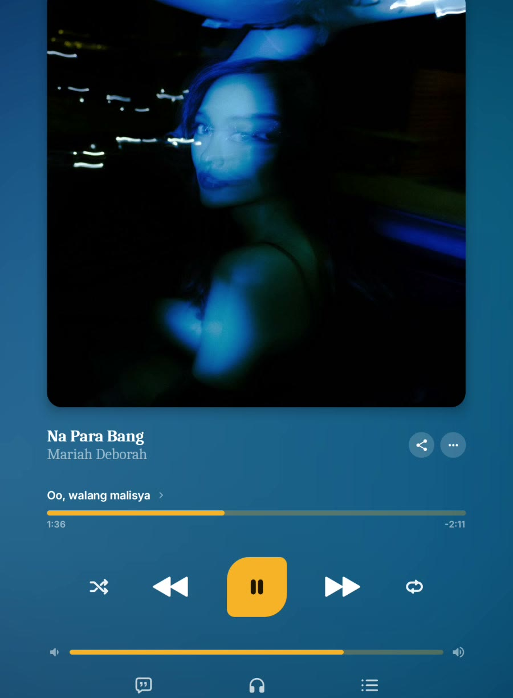

Karaoke lyrics
Lyrics that keep up with the song. Word-by-word highlighting when the timing is there, clean line sync when it isn't — plus search, copy, and lyrics saved for offline.
Sonariq is a free, open-source music player for Android — karaoke lyrics that follow every word, listening parties with friends, and a vibe that never stops. On your phone and your TV.
Free forever · No sign-up · GPL-3.0 open source

No subscriptions, no accounts, no noise — just music, done right.
Lyrics that keep up with the song. Word-by-word highlighting when the timing is there, clean line sync when it isn't — plus search, copy, and lyrics saved for offline.
Start a party and listen in sync with friends, wherever they are. Share one link and everyone's in — no accounts, just music.
When the queue runs low, Sonariq reads the vibe — the sound, the mood, your habits — and keeps the music flowing. It never just stops.
Shape your sound with a real 7-band equalizer, hand-tuned presets, and tone controls that actually do something.
Download songs and their lyrics for the road. Smart downloads keep your library fresh over Wi-Fi. Truly offline, truly yours.
The full Sonariq experience on the big screen — browse with your remote and sing along to giant karaoke lyrics.
Parties live on Sonariq links. Share yours anywhere — messages, group chats, anywhere links work.
Tap Listen Together in the app and you're hosting.
Send your Sonariq party link to friends — it works anywhere links work.
One tap opens the app straight into the party. No app yet? The link takes them to the download page instead.
Links open the app directly when it's installed — otherwise they land on a Sonariq download page.
Free forever. Pick your device — both install straight from GitHub, no store needed.
The full player for your Android phone — karaoke lyrics, listening parties, vibe autoplay, EQ, offline mode, and widgets.
Download phone APKThe big-screen experience for Android TV — browse with your remote, hand playback to the TV, and sing along to giant karaoke lyrics.
Download TV APKBoth APKs always carry the latest release · Open source (GPL-3.0) · Installing over an older version keeps everything.